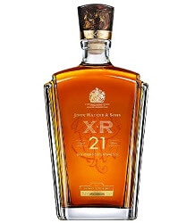

JOHN WALKER & SONS EXCLUSIVE BLENDS
Mezclas exclusivas creadas para celebrar grandes logros.
JOHN WALKER & SONS XR 21

JOHN WALKER & SONS REY JORGE V

JOHN WALKER & SONS PRIVATE COLLECTION 2014 EDITION
JOHN WALKER & SONS PRIVATE COLLECTION 2015 EDITION

JOHN WALKER & SONS ODYSSEY
THE JOHN WALKER

JOHN WALKER & SONS DIAMOND JUBILEE
JOHN WALKER & SONS XR 21
Firme, balanceado y elegante, tiene notas intrigantes de intensidad que sorprenden y deleitan. Miel dulce y especias con carácter se envuelven en un cálido toque ahumado. Cítricos, frutas tropicales maduras y caramelo entre notas de tabaco y pasas. El largo, suave y relajante final es complejo y fascinante - un sinnúmero de influencias que terminan con notas sutiles de turba.
JOHN WALKER & SONS REY JORGE V

Es entregado en un decántador refinado de vidrio oscuro que insinúa la icónica etiqueta inclinada de Johnnie Walker, acompañado por un certificado de auntenticidad con un número de serie único.
El John Walker & Sons King George V es la mejor forma de degustar un momento memorable en su camino.
JOHN WALKER & SONS PRIVATE COLLECTION 2014 EDITION

Un estudio del sabor, una expresión supremamente sofisticada del sabor ahumado de tres de las regiones de whisky más conocidas de Escocia: humo intenso y turba de Islay, humo marítimo dulce y fresco de las Islas y humo sutil de las Highland.
Solo fueron elaborados 8.888 decantadores de la John Walker & Sons Private Collection 2014 Edition. Cada uno de estos hermosos decantadores de vidrio azul oscuro está numerado individualmente, con un diseño inigualable que sugiere la famosa etiqueta inclinada de Johnnie Walker.
JOHN WALKER & SONS PRIVATE COLLECTION 2015 EDITION

Solo fueron elaborados 8.888 decantadores de la John Walker & Sons Private Collection 2015 Edition. Cada uno de estos hermosos decantadores está numerado individualmente, con un diseño inigualable que sugiere la famosa etiqueta inclinada de Johnnie Walker.
John Walker & Sons Private Collection Edición 2015 ha ganado Double Gold Medal y ha sido nombrada "Best Blended Scotch - No Age Statement" en la San Francisco World Spirits Competition de 2015.
JOHN WALKER & SONS ODYSSEY
John Walker & Sons Odyssey se presenta en un decantador de cristal ultra moderno, en una caja ingeniosa y elegante que le permite oscilar libremente hacia delante o hacia atrás sin caerse.
Este whisky elegante tiene un tono rojizo intenso y distintivo que hace alusión a taninos amables y jugosos. Con el primer sorbo, el caramelo y la miel emergen seguidos por bayas cocidas, nueces ahumadas y notas delicadas de cítricos. El final es sublime - un impecable y rico sabor ahumado que parece perdurar para siempre.
THE JOHN WALKER
The John Walker se presenta en un hermoso decantador de cristal de Baccarat soplado a mano con un collar en oro de 24 kilates. La botella se encuentra en un cabinete lacado, cuya fabricación tomó 60 horas de artesanía fina. Cada decantador está numerado y acompañado por un certificado de autenticidad.
Este whisky es rico y tiene reminiscencias de frutos maduros con aromas jóvenes de cítricos frescos flotando alrededor. Con el primer sorbo, una explosión de roble y vainilla recorre el paladar. El cuerpo robusto y la elegante estructura de la mezcla son evidentes inmediatamente mientras opulentos sabores caen en cascada hacia una cama de notas dulces y sutiles. Luego, se transforman constantemente para al final, ofrecer un eco del icónico sabor ahumado. Este es un whisky de discernimiento único.
JOHN WALKER & SONS DIAMOND JUBILEE
El Diamond Jubilee por John Walker & Sons es gloriosamente complejo, elegante y profundamente evocativo de una vida bien vivida. Un whisky profundamente estructurado y único que está lleno de contradicciones armoniosas - considerado maduro con vitalidad jubilosa, complejidad maravillosa y elegante simplicidad, todos capturados en un solo sorbo.
iene una apariencia dorada suave y clara y en nariz, es intrigantemente aterciopelado y fresco. Al paladar trae notas frutales y claras con una dulzura que se seca hasta convertirse en notas de vainilla y taninos. Luego, es seguido por una cremosidad seductora y notas de especias, con toques de madera ahumada en el final. Jubiloso e inolvidable.